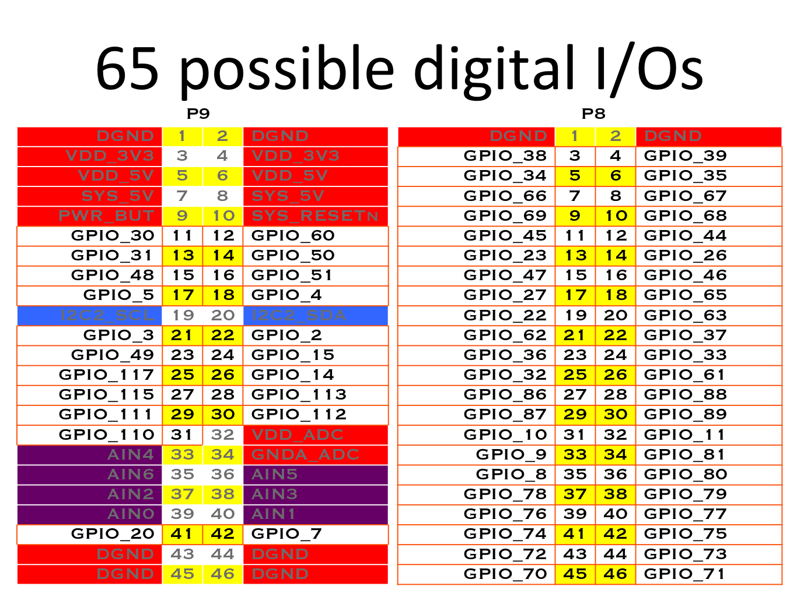
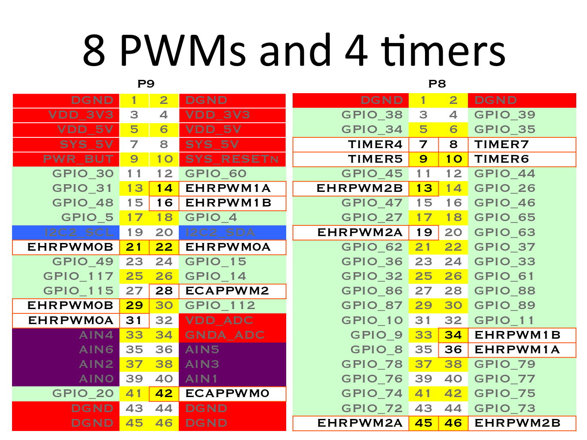
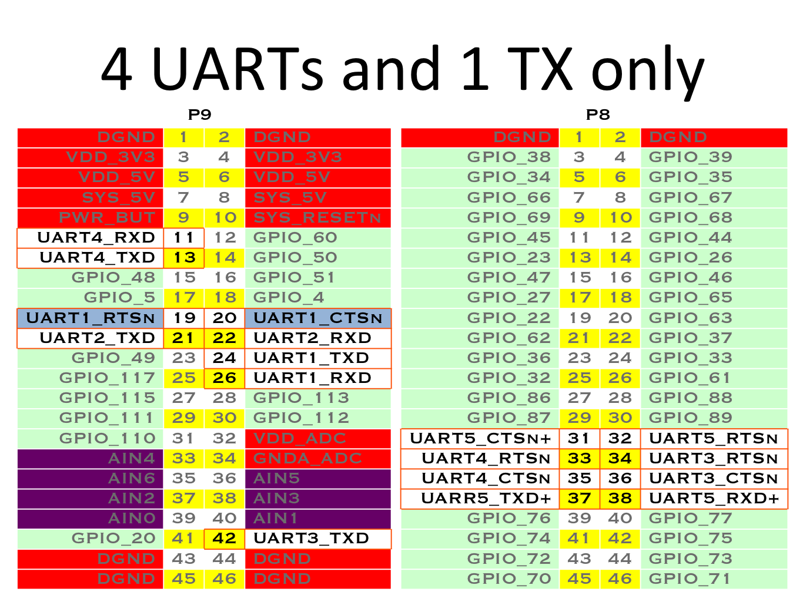
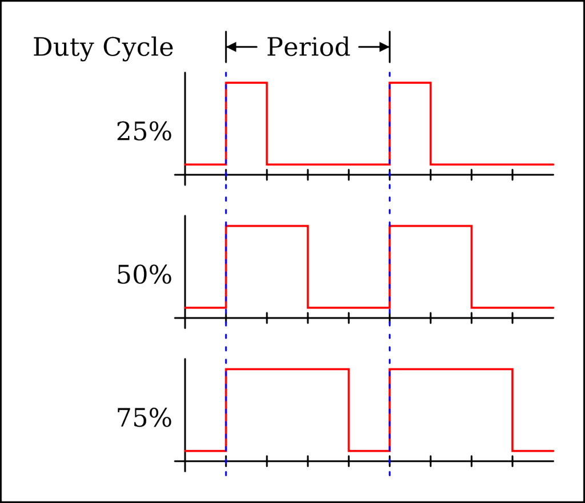

class: center, middle # Linux GPIO ## Spaß mit sysfs, BeagleBoneBlack und RaspberryPi --- # GPIO - General Purpouse Input / Output .floatright[] - Weil ICs klein und externe PINs wertvoll sind - Einsatzmöglichkeiten von ICs vervielfacht - Heute Standard auf jedem µC und SoC - Gut so, weil man damit lustige Dinge machen kann - BeagleBone, RaspberryPi, Arduino, Teensy, Arietta, TP-Link, etc --- class: center, middle # PIN im RL  ??? # Der PIN ## Software trifft das echte Leben Damit lassen sich coole Dinge machen. z.b. Relays steuern Wie steuere ich das in Software? --- # Wie konfiguriere ich das? .smallfont.floatright.graybox[ | Offset | Register Name | |-----|---------------------| |0h | GPIO_REVISION | |10h | GPIO_SYSCONFIG | |20h | GPIO_EOI | |24h | GPIO_IRQSTATUS_RAW_0 | |28h | GPIO_IRQSTATUS_RAW_1 | |2Ch | GPIO_IRQSTATUS_0 | |30h | GPIO_IRQSTATUS_1 | |34h | GPIO_IRQSTATUS_SET_0 | |38h | GPIO_IRQSTATUS_SET_1 | |3Ch | GPIO_IRQSTATUS_CLR_0 | |40h | GPIO_IRQSTATUS_CLR_1 | |44h | GPIO_IRQWAKEN_0 | |48h | GPIO_IRQWAKEN_1 | |114h | GPIO_SYSSTATUS | |130h | GPIO_CTRL | |134h | GPIO_OE | |138h | GPIO_DATAIN | |13Ch | GPIO_DATAOUT | |140h | GPIO_LEVELDETECT0 | |144h | GPIO_LEVELDETECT1 | |148h | GPIO_RISINGDETECT | |14Ch | GPIO_FALLINGDETECT | |150h | GPIO_DEBOUNCENABLE | |154h | GPIO_DEBOUNCINGTIME | |190h | GPIO_CLEARDATAOUT | |194h | GPIO_SETDATAOUT |] - [AM335x Technical Reference Manual, 4699 Seiten](http://www.ti.com/dsp/docs/dspsupporttechdocs.tsp?sectionId=3&tabId=409&docCategoryId=6&viewType=mostuseful&rootFamilyId=44&familyId=2920) - Am SoC wie bei den meisten µC - Für Effekt a Bit x in Byte y an Adresse z setzen -- Ernsthaft ? -- - Ja, aber Linux Kernel Treiber tun das für uns<br/> ---> Einheitliche Abstraktion --- class: center, middle background-image: url(images/one_ring_to_rule_them_all_by_slamiticon-d60iccm.png) # SysFS to rule them all --- # GPIOs in SysFS ```bash ~# cd /sys/class/gpio /sys/class/gpio# ls export gpiochip0 gpiochip32 gpiochip64 gpiochip96 unexport /sys/class/gpio# echo 20 > export /sys/class/gpio# cd gpio20 /sys/class/gpio/gpio20# ls active_low direction edge power subsystem uevent value /sys/class/gpio/gpio20# cat value 0 ``` .graybox[ | Datei | Funktion | |------------:|-------------------------------------| | **value** | Spannung am Pin: 1:HIGH 0:LOW | | **direction** | Input oder Output Pin | | **active_low** | invertiert den Wert in value | | **edge** | Interrupt, falls unterstützt | ] - <tt>gpio/gpi0/</tt> entspricht <tt>gpio0[0]</tt> (bit 0 on gpio chip 0) - <tt>gpio/gpi32/</tt> entspricht <tt>gpio1[0]</tt> (bit 0 on gpio chip 1) - <tt>gpio/gpi33/</tt> entspricht <tt>gpio1[1]</tt> (bit 1 on gpio chip 1) - usw ??? Welche Nummer ist welcher GPIO? # Konfigurationsmöglichkeiten - Input oder Output - Floating - Spannung - HIGH - LOW - Open Collector - **DEMO** --- ## Output PIN .floatright[<br/>]  .center[] ??? ## Output PIN ### PINs liefern meist nur wenige mA  LED kann schon zuviel sein Daher nicht PIN auf 1 und zu GND besser VDD zu PIN und PIN auf 0 zum einschalten --- # Input PIN - wieder 2 Zustände - Kann HIGH (1) oder LOW (0) lesen <br/> z.B.: 3.3V und 0V - Meist **KEIN** Toleranz für Überspannung - Nur Hysterese zwischen HIGH und LOW - PIN -- KNOPF -- GND<br>besser als<br>PIN -- KNOPF -- Vdd - bei externen Signalen:<br>zuästzlicher Eingangswiederstand immer eine gute Idee: ~100 Ohm - anliegende Spannung muß wohldefiniert sein - damit PIN nicht floatet, muß immer entweder HIGH oder LOW anliegen --- # Input - Pull-UP or Pull-DOWN --- # Input - Pull-UP or Pull-DOWN ??? BUTTON-DEMO --- # Interrupts statt Busy Waiting ```bash /sys/class/gpio/gpio20# cat edge none /sys/class/gpio/gpio20# echo rising > edge /sys/class/gpio/gpio20# echo falling > edge /sys/class/gpio/gpio20# echo both > edge /sys/class/gpio/gpio20# cat edge both root@beaglebone:/sys/class/gpio/gpio20# echo none > edge ``` - Abfrage mit <tt>POLL</tt> oder <tt>SELECT</tt> syscall auf FileDescriptor -- Alternativ - <tt>gpio_keys</tt> Kernel Modul<br/> liefert edge-events via <tt>/dev/input/event?</tt> --- .floatright[] # Input  --- # OneWire Kernel Modul ## Temperaturmessung mit DS18b20 - <tt>w1-gpio-custom</tt> - <tt>w1-therm</tt> Beispiel OpenWRT ```bash ~# rmmod gpio_button_hotplug ~# insmod w1-gpio-custom bus0=0,$gpio,0 ~# insmod w1_therm ~# cd /sys/bus/w1/devices /sys/bus/w1/devices# ls 28-0000052b9743 ``` --- # Noch genereller als Generell? - GPIO Chips haben bereits eingebaute Pull-Up/Down Widerstände - Müssen nur konfiguriert werden -- Muxed PINS<br/> z.B.: am BeagleBone Black AM335x - GPIO - PWM - SPI --> talk to a µC or IC - I2C --> talk to a IC or µC - UART --> talk to a µC or IC - HDMI - Touch - MMC - etc --- # Beagle Bone PIN Belegung .center[] --- # Beagle Bone PIN Belegung .center[] --- # Beagle Bone PIN Belegung .center[] --- # Beagle Bone PIN Belegung .center[<img src="images/cape-headers-spi.png" style="width:70%;" alt="BBB"/>] --- class: center, middle background-image: url(images/one_ring_to_rule_them_all_by_slamiticon-d60iccm.png) # Device Tree Overlays ## to rule and bind all ARMs * -- .footnote[.red.bold[*]dynamische rekonfiguration von Device-Trees<br/>in BBB patched kernels und ab 3.19] --- # PWM - Pulse Width Modulation .center[] --- ## PWM und Device Tree Overlays ```bash ~# cat /sys/devices/bone_capemgr.?/slots 0: 54:PF--- 1: 55:PF--- 2: 56:PF--- 3: 57:PF--- 4: ff:P-O-L Bone-LT-eMMC-2G,00A0,Texas Instrument,BB-BONE-EMMC-2G 5: ff:P-O-L Bone-Black-HDMI,00A0,Texas Instrument,BB-BONELT-HDMI ~# ls /lib/firmware/*pwm* /lib/firmware/am33xx_pwm-00A0.dtbo /lib/firmware/bone_pwm_P8_34-00A0.dtbo /lib/firmware/bone_pwm_P8_19-00A0.dtbo /lib/firmware/bone_pwm_P9_42-00A0.dtbo ~# echo am33xx_pwm > /sys/devices/bone_capemgr.?/slots ~# echo bone_pwm_P9_42 > /sys/devices/bone_capemgr.?/slots /sys/class# cat /sys/devices/bone_capemgr.?/slots 0: 54:PF--- 1: 55:PF--- 2: 56:PF--- 3: 57:PF--- 4: ff:P-O-L Bone-LT-eMMC-2G,00A0,Texas Instrument,BB-BONE-EMMC-2G 5: ff:P-O-L Bone-Black-HDMI,00A0,Texas Instrument,BB-BONELT-HDMI 7: ff:P-O-L Override Board Name,00A0,Override Manuf,am33xx_pwm 9: ff:P-O-L Override Board Name,00A0,Override Manuf,bone_pwm_P9_42 ~# cd /sys/devices/ocp.?/pwm_test_P9_42.??/ /sys/devices/ocp.3/pwm_test_P9_42.15# ls driver duty modalias period polarity power run subsystem uevent ``` --- # Analog Digital Converter - 8 Kanäle, 12 bit - BeagleBone Black: MAXIMAL 1.8V - <tt>GNDA_ADC</tt> und <tt>VDD_ADC</tt> verwenden ```bash ~# ls /lib/firmware/*ADC* /lib/firmware/BB-ADC-00A0.dtbo ~# echo BB-ADC > /sys/devices/bone_capemgr.?/slots ~# cd /sys/devices/ocp.?/helper.??/ /sys/devices/ocp.3/helper.16# ls AIN0 AIN1 AIN2 AIN3 AIN4 AIN5 AIN6 AIN7 driver modalias power ~# cat AIN0 1719 ``` --- # Device-Tree-Overlays schreiben ## oder, wie konfiguriere ich einzelne PINs ? Technischer Hintergrund: same old, same old - [AM335x Technical Reference Manual: 9.3 Control Module Registers](http://www.ti.com/dsp/docs/dspsupporttechdocs.tsp?sectionId=3&tabId=409&docCategoryId=6&viewType=mostuseful&rootFamilyId=44&familyId=2920) - Pro Pin gibt es ein drei Bit im Speicher, 8 Zustände - Richtiger Wert setzt entsprechenden MUX Device-Tree-Overlays - abstrahieren - lassen sich dynamisch laden Trotzdem nicht gerade sehr lesbar - [Device-Tree-Overlay Generator](http://kilobaser.com/blog/2014-07-28-beaglebone-black-devicetreeoverlay-generator#1gpiodto) ??? ```bash dtc -O dts -o ~/am335x-boneblack.dts -I dtb /boot/uboot/dtbs/am335x-boneblack.dtb grep part-number ~/am335x-boneblack.dts | sed 's/^\s\+//' less ~/am335x-boneblack.dts ``` --- class: center, middle # Mehr DEMOs ??? - UART zu UART - ADC Blumen Demo --- class: center, middle # SysFS ist langsam ## es geht auch 800fach so schnell [github.com/btittelbach/go-bbhw](http://github.com/btittelbach/go-bbhw) ## zurück zu den Registern --- # Links [Interrupts mit SysFS GPIO](http://www.linux.com/learn/tutorials/765810-beaglebone-black-how-to-get-interrupts-through-linux-gpio) [Linux GPIO Kernel Doc](http://www.mjmwired.net/kernel/Documentation/gpio.txt) [Device Tree Overlays](https://github.com/jadonk/validation-scripts/blob/master/test-capemgr/README.md) [Beagle Bone GPIO](http://kilobaser.com/blog/2014-07-15-beaglebone-black-gpios) [Device-Tree-Overlay Generator](http://kilobaser.com/blog/2014-07-28-beaglebone-black-devicetreeoverlay-generator#1gpiodto)